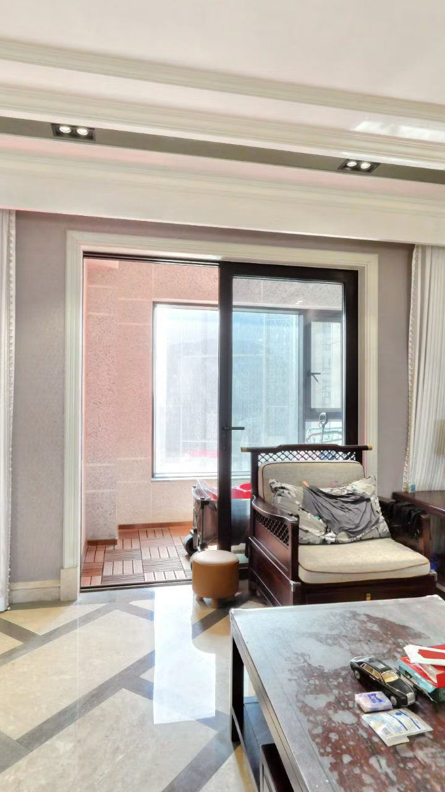

HOUSE-104119325592 · 当前首镜方案图 · 2026-10-05
1号点定点转向：移动的是视线，不是摄影机
仅解释一镜的候选动作与边界；没有全屋移动路径、房屋尺寸或真实北向。
补编待审 V1 已有6秒试片发生在本图之前；本图不是拍摄前批准凭据。先审方案＋图，再决定既有试片与任何后续执行。
① 取景角度示意（不是实际户型图）
相对源 front 面定义方向；不把未核证坐标贴到房屋平面图上。
原始面90°起始−8°结束+8°
水平视场50°；整体转向取景范围约66°，在90°源面内。
坐标眼高差约1.226≠物理量测；不认证1.5–1.6m / 0.5m净空。
② 当前主体与构图风险
同源pano1/front静态透视图；不是本轮新增试片或新现场素材。

候选主题：客厅—阳台联系
可见的主体
阳台门口、椅子与茶几；必须保留真实家具和窗外，不做生成式清空。
不应夸大的主张
不是完整客厅全景，不能据此宣传纵深米数、开间或采光保证。
先由你决定构图
近景茶几/杂物占比大、沙发不完整。可保留“空间联系”主题，或先退回调整方案。
不因补图自动重拍
已有take01冻结留存；新角度/新take另获明确许可。
候选镜长 / 本次没有新视频6秒 · 180帧
格式720×1280 / 30fps
当前镜声音 / 字幕 / CTA全部不启用
空间平移 / 费用0位移 / 0新增付费
③ 必须先交付方案，再进入逐镜试拍
方案＋PNG
先交你审
→先交你审
明确本镜
执行许可
→执行许可
只试本镜
技术＋事实检查
→技术＋事实检查
绑定试片SHA
你完整审看
→你完整审看
获接受后
才提下一镜
才提下一镜
整片目标30–45秒，但后续只定义内容模块；不预写未经实测的全量台词、镜长或运动路径。仅内部用途，方言当前不做。
此图为2026-10-05补编待审提案。原试验许可/合同与唯一take01保留；图示不追认前置审阅、不认证全屋映射或用户产物接受。